Three-Liquid Vertical Liquid Lock
Three-Liquid Vertical Liquid Lock
This is a quick and dirty howto on creating a vertical liquid lock using three different types of liquids, which I learned via UI/UXと一括りにする奴は潰す and @Fuhduki
All you need to do is to carefully place three different types of liquids and stack them up together to create something like below— a vertical liquid lock, which doesn’t require the use of a viscogel.
Other than being visually cool, this lock has the added bonus of not incurring the “Sopping wet” debuf that you get on other types of liquid locks. This is presumably because the duplicants instataneously “warp” between tiles when they hop between gaps (at least, this is the case as of Aug 2019)
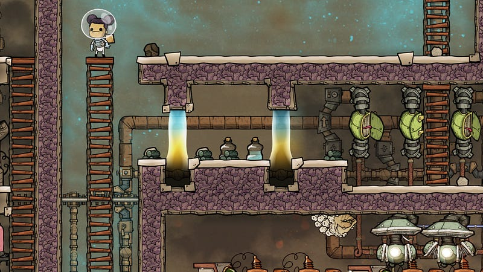
Let’s get right on it. Suppose this is where you want to create the lock.
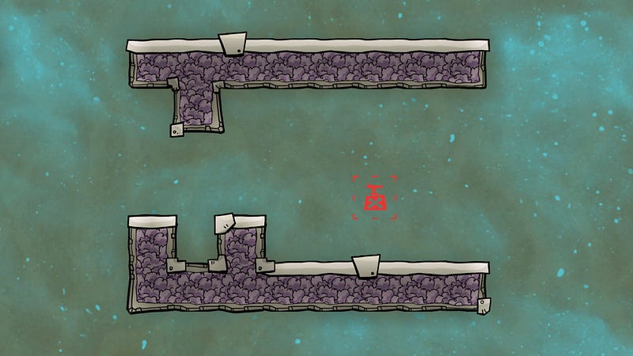
Make sure to create at least TWO tiles worth of space on either side. This is important to clean excess liquid later.
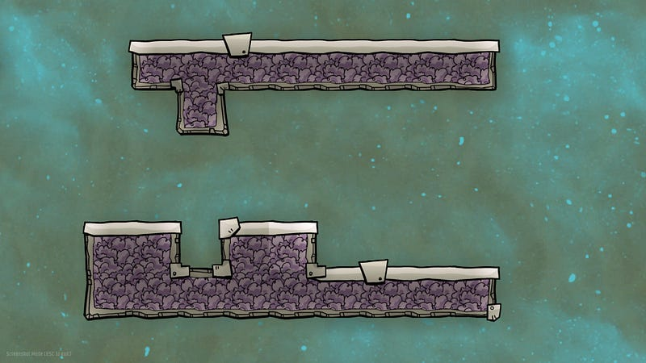
Create support on one side so that three tiles worth of liquid can stack up.
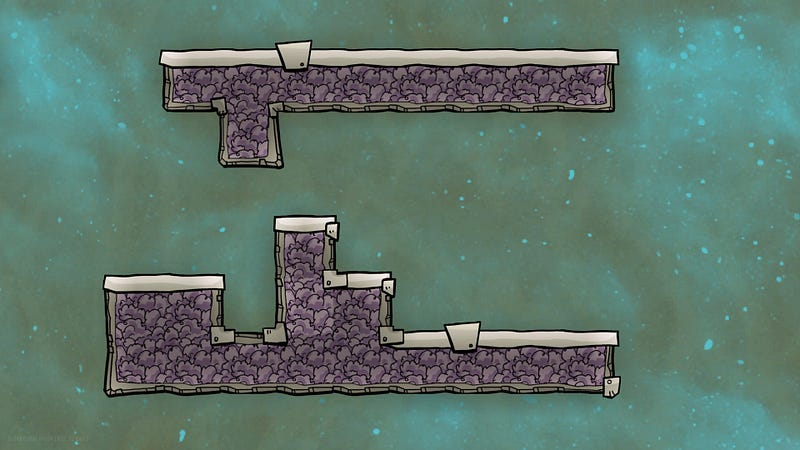
Create a bottle emptier.
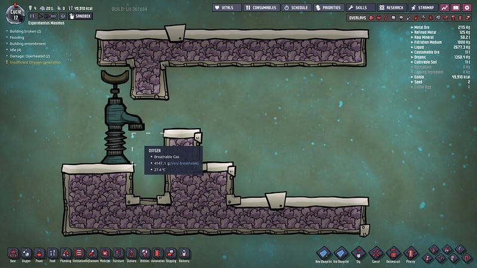
Order the duplicants to bring three different types of liquids. Anything is OK, really, as these liquids will naturally be of different density, and one will stack on top of the other. I personally like to use crude oil, petroleum, and water.
When the duplicants starts emptying the bottles, make sure to almost immediately cancel delivery, as you only need a tiny amount of liquid for each type.
Once you bring three different types of liquid, something like below will happen. This particular example was built using 1kg of each liquid. In real game, you will probably dump more liquid, but as long as it’s well below the 800kg mark, you should be OK.
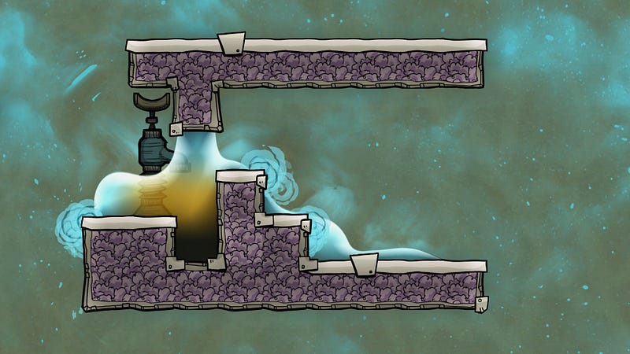
Once you got all the liquids, flatten the side with the extra tile.
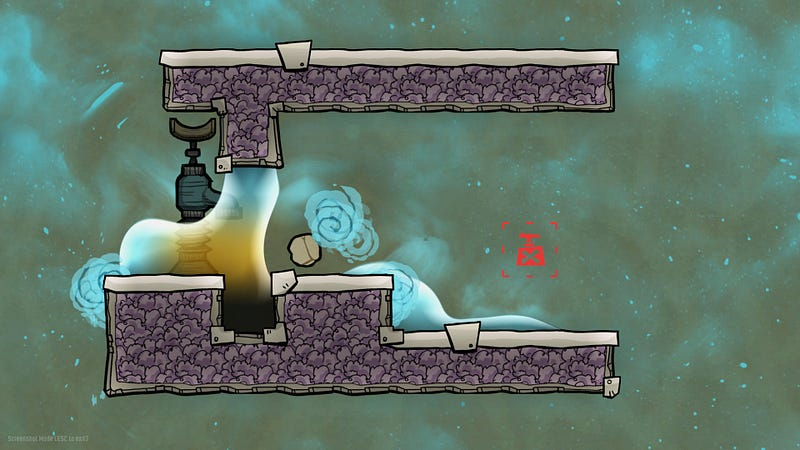
Now here’s the trick: We want to mop the excess liquid, but we want to keep all the liquid in that vertical lock part. To do that, we instruct the duplicants to ONLY mop two tiles away from the lock.
The mop command actually mops the tile that was specified AND tiles to both sides of said tile (i.e. three tiles in total). This means that if you instruct the duplicants to mop right next to the lock, the liquid in the lock will also be mopped away — but that’s not what we want. This is why we keep at least two tiles on either side to make sure we can get rid of the excess liquid.
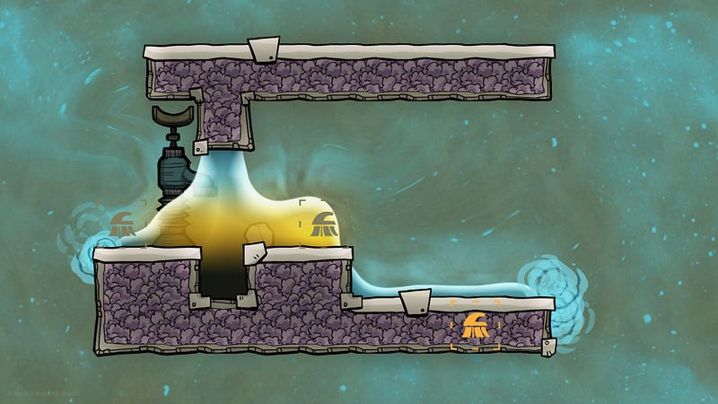
Once you get the duplicants to mop the excess liquid, you should find a nice vertical liquid lock.
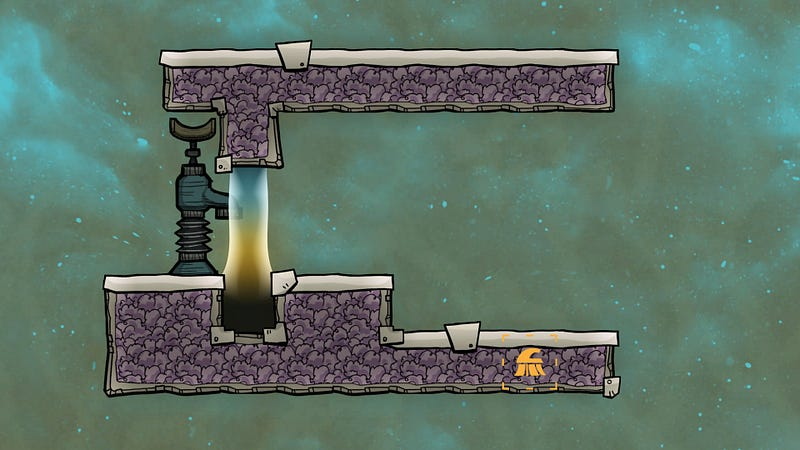
Now all you need to do is to chop away the extra stuff…
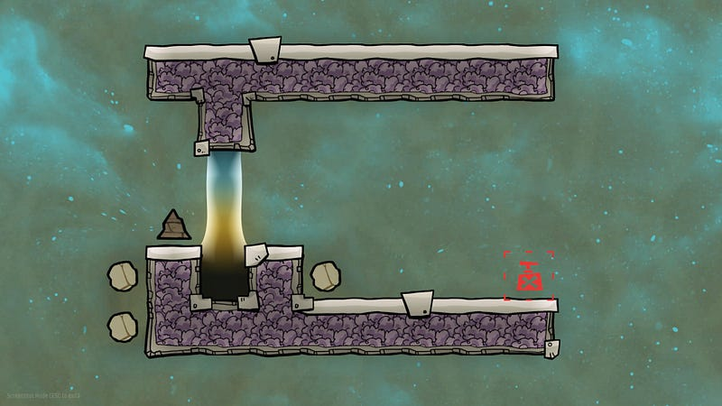
…and you’re done!
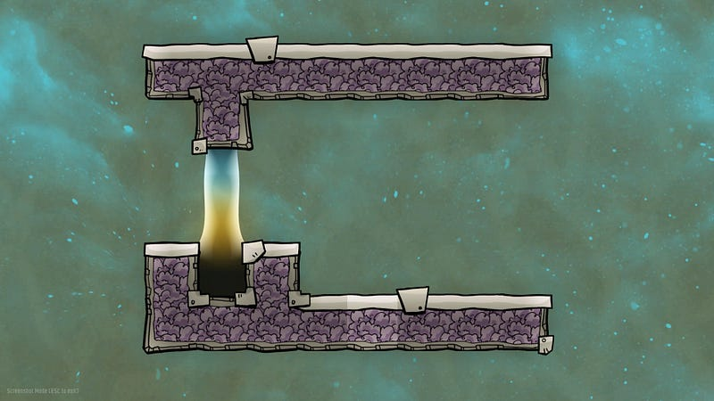
Remember, as long as there are two tiles worth of space next to the locks, you can repeat this pattern to create a room flanked by liquid locks, which allows you to create vacuum seals like the first picture on this blog entry (that is to say, the minimum distance between these liquid locks is at least 3 tiles. anything less that that and you won’t be able to properly mop the excess)
Happy digging!